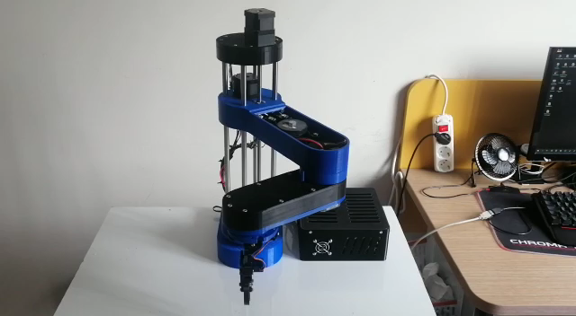
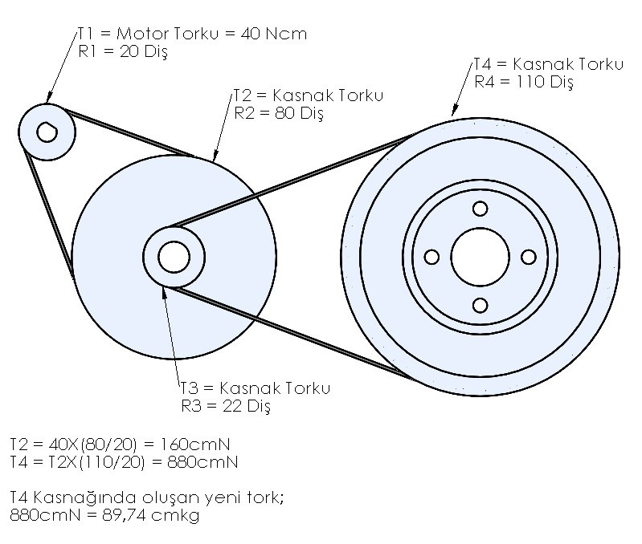
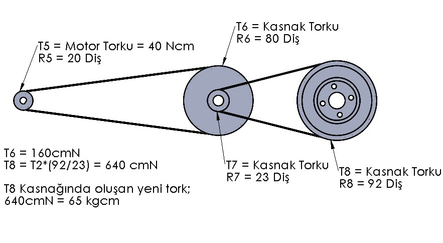
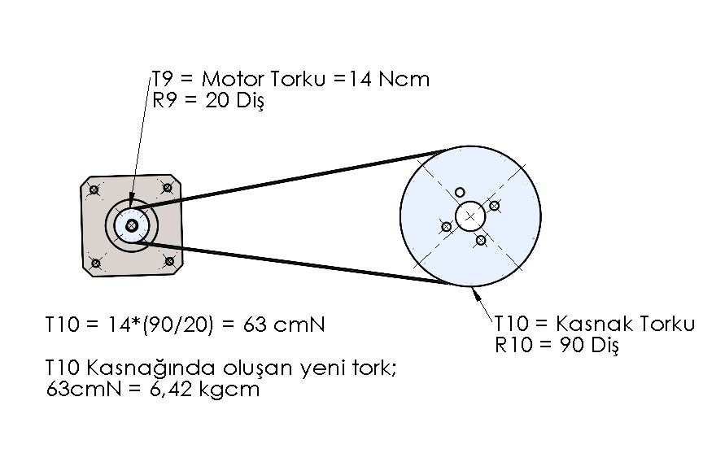
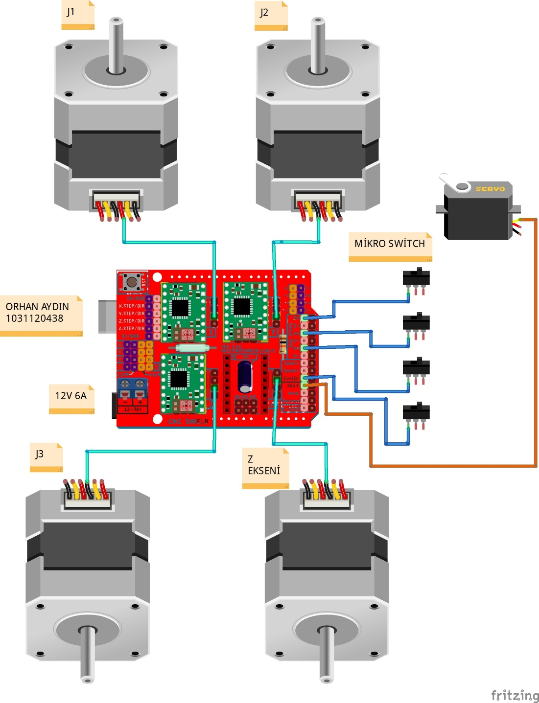
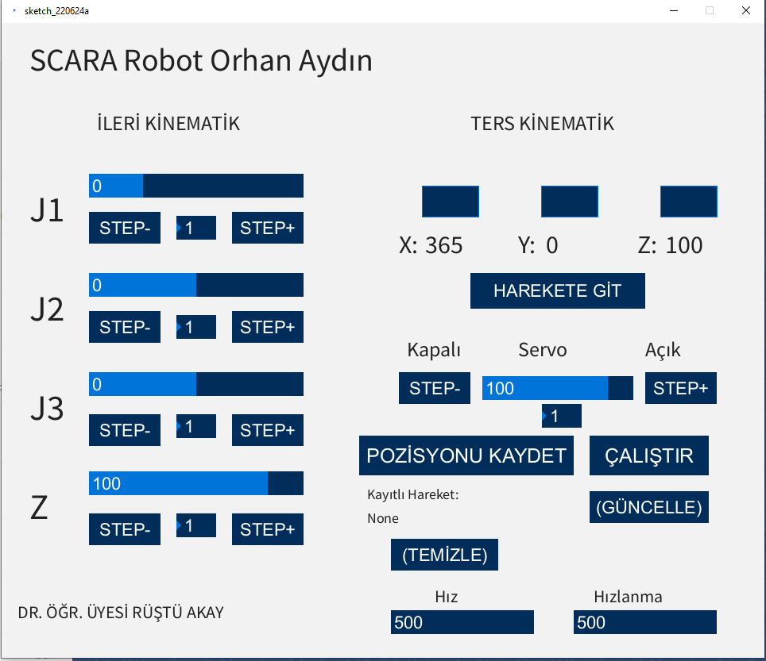

Home every axis
Each axis moves to its limit switch to establish a repeatable reference position.
My BSc dissertation project: a custom SCARA robot developed from mechanical design and 3D-printed manufacturing through embedded control, homing, kinematics and a Processing-based desktop interface.
Project Brief
The project was completed as my undergraduate dissertation in Mechatronics Engineering. I designed the SCARA structure in SolidWorks, manufactured the chassis with PLA 3D printing, assembled the mechanical transmission and developed the embedded and desktop control software.
The final system combined four stepper-driven axes, a servo gripper, limit-switch homing, serial communication and a user interface capable of manual joint control, coordinate-based motion and repeated playback of recorded positions.
Physical Prototype

The chassis was printed in PLA using approximately 2 kg of filament over a two-to-three-week manufacturing period. Bearings, guide rods and belt transmissions were used to reduce friction and move the motor loads away from the main rotating axes.
Mechanical Design
The main rotary joints use pulley reductions to increase effective output torque while keeping the NEMA 17 motors mounted away from the moving links.



Electronics
The control hardware uses an Arduino Uno with a CNC Shield, four A4988 stepper drivers, four NEMA 17 motors, an SG90 servo motor and limit switches for axis referencing.
At startup, the robot homes each axis against its limit switch before accepting commands, creating a repeatable reference for recorded motion sequences.

Software

The Processing interface sends joint and coordinate data to Arduino through a serial connection. It supports forward-kinematics control, inverse-kinematics target input, gripper control, step-size adjustment, motion recording and looped playback.
The inverse-kinematics routine converts X-Y target coordinates into joint angles and calculates an orientation angle to keep the gripper aligned with the selected axis.
Operating Sequence
Each axis moves to its limit switch to establish a repeatable reference position.
The Processing application sends joint values or target coordinates through the serial port.
Arduino converts the received data into stepper and servo commands.
Saved positions are executed in sequence and can be repeated until the operator stops the cycle.
Demonstration
Limitations
The robot uses open-loop stepper control, so positioning accuracy depends on successful homing and the absence of skipped steps. Mechanical accuracy is also constrained by 3D-printed tolerances, belt tension and assembly alignment.
The project demonstrates complete mechatronics integration, but it was developed as a BSc dissertation prototype rather than a production-certified industrial robot.
Project Link